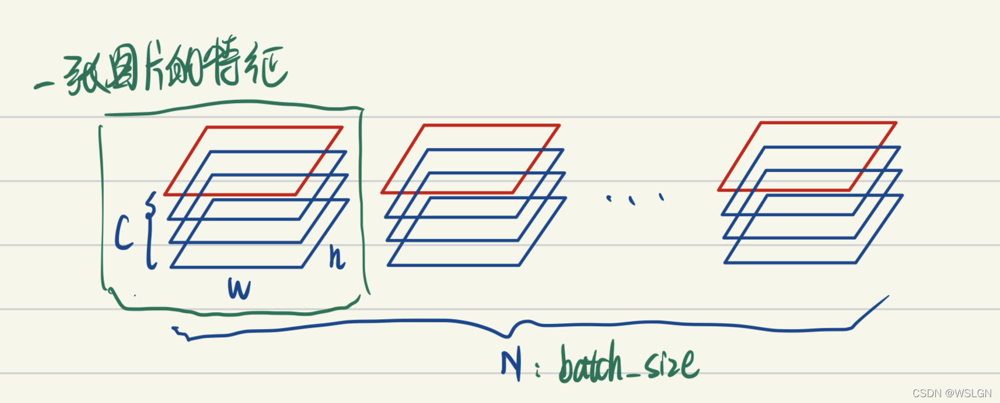
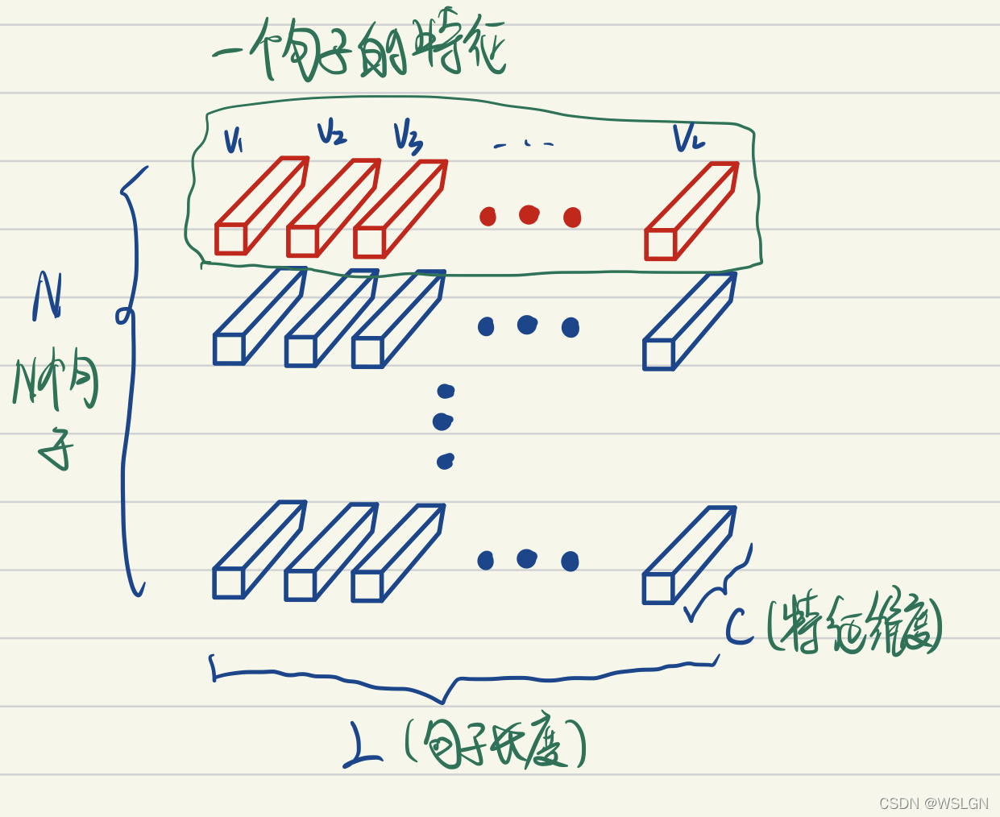

协变量偏移，BatchNorm 和 LayerNorm
协变量偏移
协变量
协变量（Covariate）是指除自变量外，会影响因变量的其他变量。
例如，假如需要通过函数 去回归给定的数据 ，那么 为因变量， 为自变量（在拟合过程中不断更新），而 就是协变量。
协变量偏移
协变量偏移（Covariate Shift）是数据集偏移（Dataset Shift）的一种，指的是在模型训练和应用时，输入数据（特征）的分布发生了变化，但输出标签的分布保持不变。一般分为两种：
- 内部协变量偏移：在训练过程中，深度网络隐藏层的前一层参数更新，会改变其输出，从而直接改变后一层的输入分布，导致深度网络内部任一隐藏层的输入数据分布随着训练迭代而发生动态变化。这使得每一层都需要不断适应一个“漂移”的输入分布，导致训练不稳定、收敛慢、需要更小的学习率。
- 外部协变量偏移：训练集的输入分布与测试集的输入分布不一致。这会导致模型在训练集上表现良好，但在测试集上表现不佳。
BatchNorm 与 LayerNorm
BatchNorm

上图画的是一个 batch_size 为 N 的图像特征张量。
BatchNorm 把一个 batch 中同一通道的所有特征（如上图红色区域）视为一个分布（有几个通道就有几个分布），并将其标准化。这意味着：不同图片的的同一通道的相对关系是保留的，即不同图片的同一通道的特征是可以比较的；而同一图片的不同通道的特征则是失去了可比性。
有一些可解释性方面的观点认为，feature 的每个通道都对应一种特征（如低维特征的颜色，纹理，亮度等，高维特征的人眼，鸟嘴特征等）。BatchNorm 后不同图片的同一通道的特征是可比较的，例如说 A 图片的纹理特征和 B 图片的纹理特征是可比较的；而同一图片的不同特征则是失去了可比性，例如说 A 图片的纹理特征和亮度特征不可比较。
这其实是很好理解的，视觉的特征是比较客观的，一张图片是否有人跟一张图片是否有狗这两种特征是独立，即同一图片的不同特征是不需要可比性；而人这种特征模式的定义其实是网络通过比较很多有人的图片，没人的图片得出的，因此不同图片的同一特征需要具有可比性。
LayerNorm

上图画的是一个 N 个句子的语义特征张量。
如上图 LayerNorm 把一个样本的所有词义向量（如上图红色部分）视为一个分布（有几个句子就有几个分布），并将其标准化。这意味着：同一句子中词义向量（上图中的 ）的相对大小是保留的，或者也可以说 LayerNorm 不改变词义向量的方向，只改变它的模；而不同句子的词义向量则是失去了可比性。
考虑两个句子，“教练，我想打篮球！” 和 “老板，我要一打包子。”。通过比较两个句子中 “打” 的词义我们可以发现，词义并非客观存在的，而是由上下文的语义决定的。
因此进行标准化时不应该破坏同一句子中不同词义向量的可比性，而 LayerNorm 是满足这一点的，BatchNorm 则是不满足这一点的。且不同句子的词义特征也不应具有可比性，LayerNorm 也是能够把不同句子间的可比性消除。
效果
BatchNorm（批归一化）和 LayerNorm（层归一化）都是归一化技术，它们核心要解决的根本问题是相似的：
- 缓解内部协变量偏移：在深度网络中，前面层的参数更新会改变后面层输入的分布（就像数据的“分布”发生了漂移）。这使得每一层都需要不断适应变化的输入分布，导致训练变慢、不稳定，需要更小的学习率和精细的参数初始化。
- 稳定训练过程，加速收敛：通过对数据进行归一化（减去均值，除以标准差），将每一层输入的激活值（或梯度）强行拉回到均值为0、方差为1的标准分布附近。这使得：
- 损失曲面更加平滑，允许使用更大的学习率。
- 缓解梯度消失或爆炸问题。
- 对参数初始化的要求降低。
- 提供一定的正则化效果：归一化过程引入了噪声（因为均值和方差是基于一个 mini-batch 的数据计算得出的，而不是整个数据集），这种噪声可以起到轻微的正则化作用，有助于防止过拟合（BatchNorm 的这种效果更明显）。
总的来说，BatchNorm 的提出是为了解决 CNN 等模型在大批量数据训练时的内部协变量偏移问题，加速收敛、稳定训练。而 LayerNorm 正是为了解决 BatchNorm 在小批量、变长序列（如 NLP） 场景下的缺陷，为 RNN 和 Transformer 这类模型提供一个稳定、一致的归一化方案。
参考
什么是协变量以及协变量的定义是什么？ - 快乐的木火的回答 - 知乎